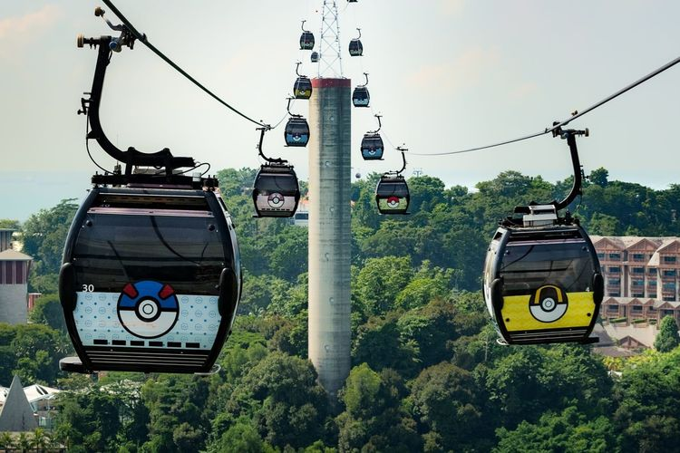

Ada Kereta Gantung Bertema Pokemon di Singapura, Cek Tarifnya
Ni Nyoman Wira Widyanti
KOMPAS.com - Penggemar manga/anime Pokemon bisa coba naik kereta gantung (cable car) di Sentosa, Singapura, yang tersedia hingga tahun depan, tepatnya Selasa (30/4/2024). "Bersiaplah memasuki dunia Pokemon di dalam kereta Singapore Cable Car pada musim liburan ini, sembari menikmati pemandangan indah pencakar langit Singapura," bunyi keterangan yang dikutip dari laman resmi Sentosa, Rabu (15/11/2023).
Baca Selengkapnya